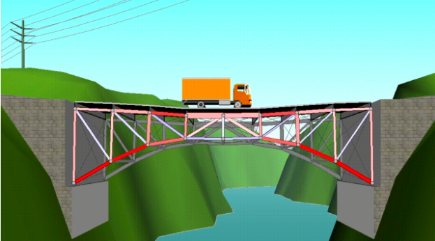
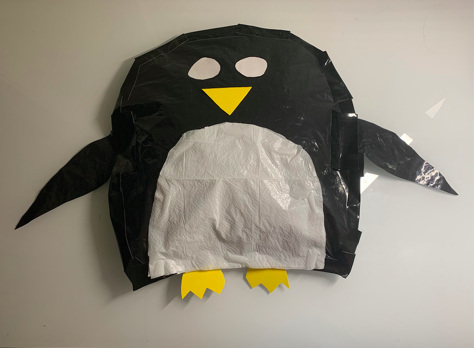

Projects
Archit Kumar
Bridge Design Project - Green Crossings

Principles of Engineering
March 2021 - April 2021
Partners: Param Gandhi, Anurag Ravikumar, Anishkumar Senthil
Project Rubric: Available Here
Project Documentation: Available Here
The objective of this project was to develop a safe and cost-effective bridge enabling trucks to travel across a river. I served as the task manager for this project and divided roles and responsibilites among my teammates. My partners and I designed several bridge prototyes in order to determine which bridge features were the most advantageous and cost-effective. After creating a total of eight brainstorms, we assessed each design on its safety, its cost, its environmental impact, and its visual appeal using a decision matrix. We chose one design that best served our needs, and created modifications in order to make it even cheaper and safer. One of the major selling points of our bridge is its low environmental impact - there is hardly any excavation required, and no pier that interferes with the river ecosystem. Overall, this was both a fun and challenging project that allowed me to discover ways to make public structures more eco-friendly.
Upcycling Project - Eco Buddies

Principles of Engineering
February 10th - March 4th, 2021
Partner: Param Gandhi
Project Rubric: Available Here
Project Documentation: Available Here
The objective of this project was to develop a marketable product out of recycled materials. I served as the team manager for this project and worked to brainstorm project ideas and to organize group documents. My partner Param and I decided to produce a line of stuffed toys made out of recycled plastic materials. Not only did these toys help promote eco-friendly entertainment for children, but they were also superior to traditional stuffed toys in several ways, such as by being waterproof. To develop this project, Param and I brainstormed ideas, constructed elaborate prototypes, and conducted material testing to determine the durability of the product. To conclude the project, we marketed our product to potential investors using a presentation and a sales pitch. Overall, this is one of the projects I am most proud of, as I was able to utilize my engineering and entrepeneurship skills to address the urgent global issues of pollution and waste.
Image Manipulation Project - Defenders of the Ocean

Computer Science Principles
March 17th-March 23rd, 2020
Partner: None
Project Rubric: Available Here
Project Documentation: Deliverable, Development Diary
The goal of this project was to create an enticing image to fulfill the needs of a client. My client was the National Geographic organization, which required a poster that promoted their cause of ocean conservation. I worked on this project individually, and my tasks included choosing a topic, choosing images that could be used to fullfill my client's needs, and writing code that would manipulate my selected images to create a visually-appealing product. Through this project, I learned how to use the image manipulation tools in the Python Imaging Library. Additionally, I strengthened my skills in reading and modifying pre-bluilt code in Python. Throughout the course of the project, the greatest challenge I overcame was deciding a topic for my project. I cycled through many trial concepts before I finally settled on the choice to create a poster for the National Geographic organization. Overall, working on this project individually allowed me to strengthen my personal drive and self-motivation. This experience will help me boost my productivity during any future individual or group programming projects.
Scratch Project - Horde Lord
Computer Science Principles
August 14th-September 11th, 2019
Partner: Jaspal Khanuja
Project Rubric: Available Here
Project Documentation: Available Here
The objective of this project was to develop a video game using the Scratch programming tool. My role in this project was to develop graphics and code for the game, while my partner, Jaspal Khanuja, worked to brainstorm ideas and to document the development process. Working on this project taught me about variable roles in programming, as well as how to professionally document the development of a project. A challenge that Jaspal and I encountered during development was when we realized that the player controls we had developed would not enable multiplayer, co-op gameplay -- a feature we had been planning to add. Ultimately, we redesigned the game’s controls in order to accomodate this feature. Overall, this project helped me strengthen my time-management skills and efficiency in order to create an exciting and finished project within a one-week time limit.